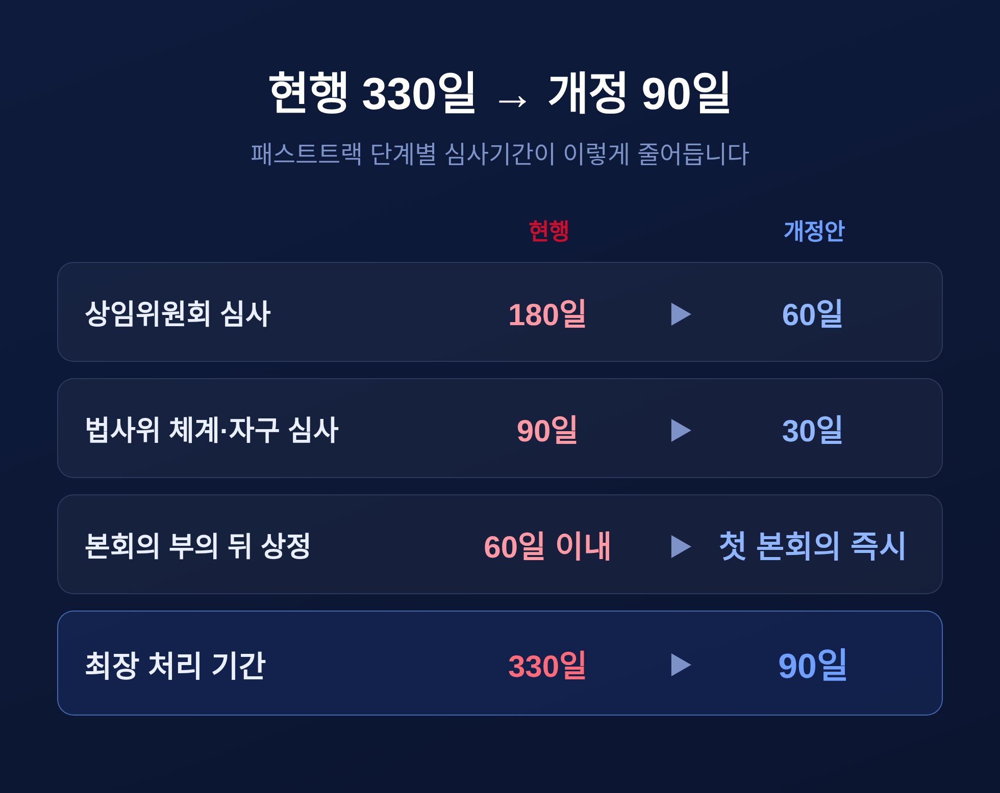
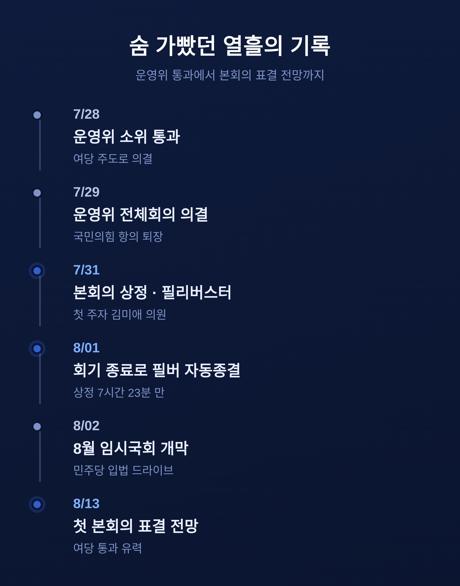
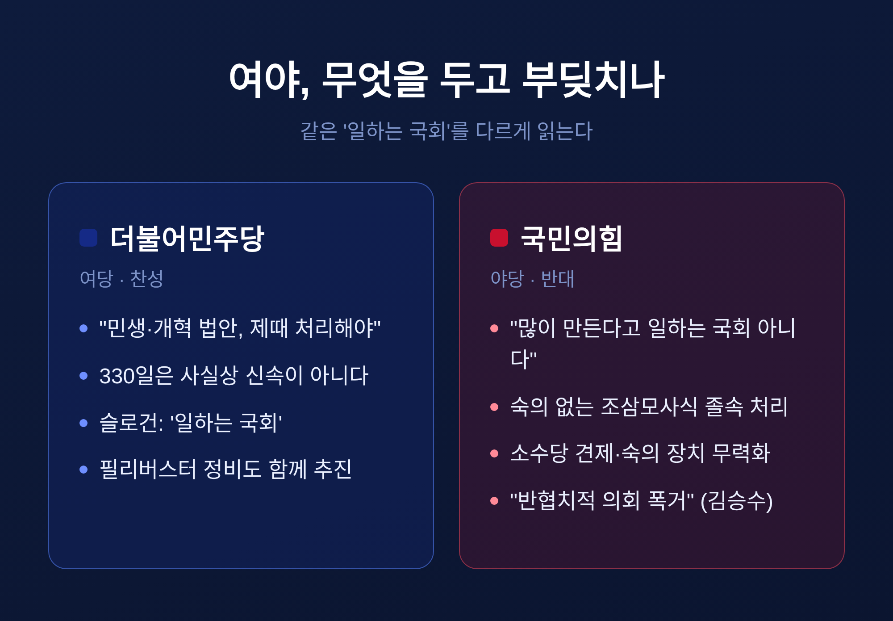
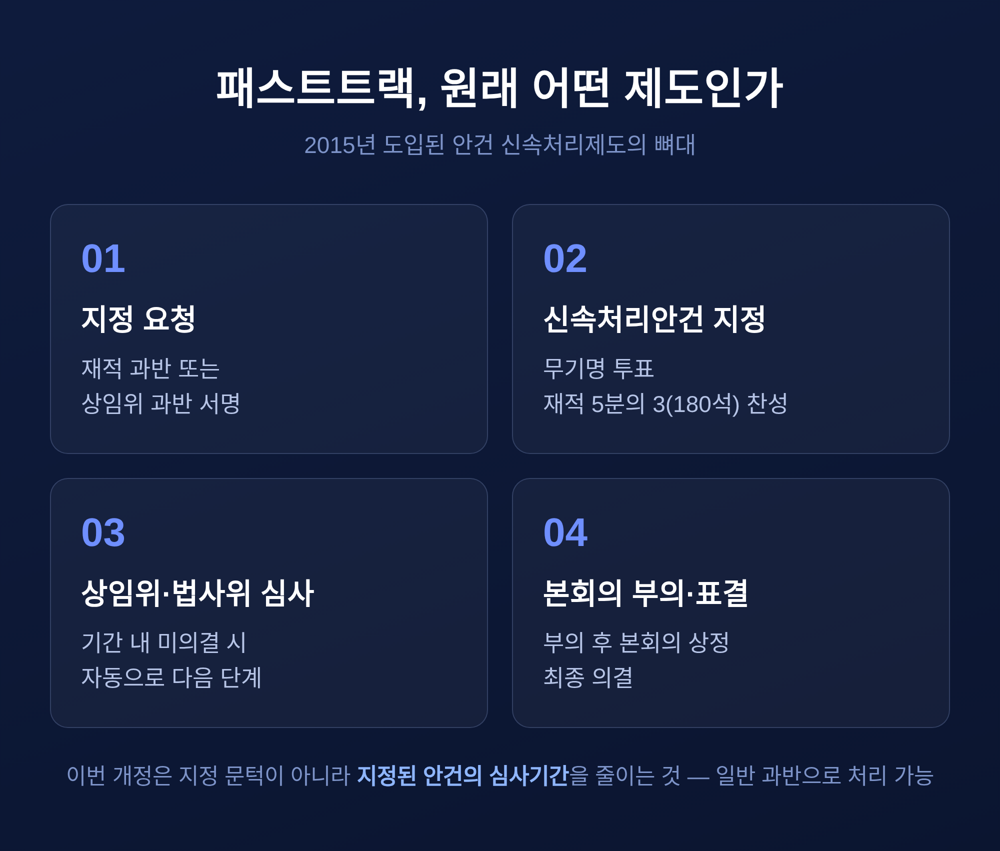
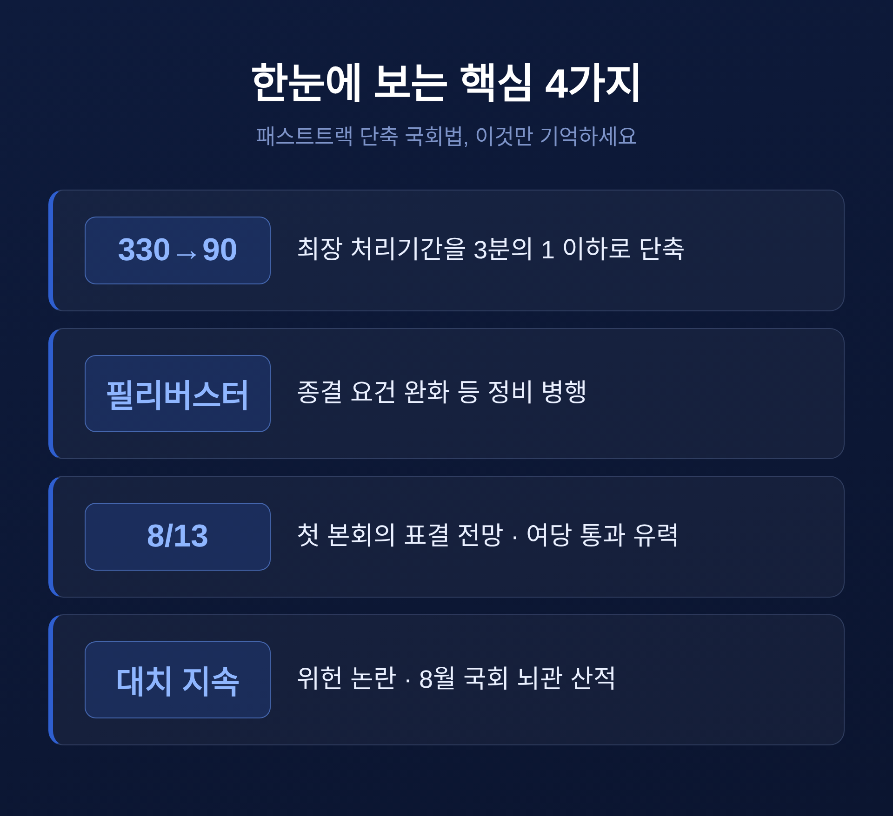

이번 글에서는 8월 임시국회의 최대 쟁점으로 떠오른 국회법 개정안을 정리해 보겠습니다. 신속처리안건, 이른바 패스트트랙의 심사기간을 최장 330일에서 90일로 줄이는 법안입니다. 무슨 내용이고, 왜 여야가 정면으로 부딪치는지 차근히 짚어보겠습니다.
먼저 결론부터 말씀드립니다. 이 법안은 8월 13일로 예상되는 첫 본회의에서 여당 단독으로 통과될 가능성이 높습니다. 소수당의 견제 장치를 두고 벌어지는 다툼이라, 통과 여부만큼이나 그 과정이 남길 파장이 큽니다.
핵심은 하나입니다. 패스트트랙에 오른 법안의 처리 기간을 대폭 줄이는 것입니다.
지금은 한 법안이 패스트트랙으로 지정되면 상임위원회에서 180일, 법제사법위원회에서 90일, 본회의 부의 뒤 상정까지 60일이 걸립니다. 다 더하면 최장 330일입니다. 거의 1년입니다.
개정안은 이 시간표를 크게 압축합니다. 상임위 심사는 60일로, 법사위 체계·자구 심사는 30일로 줄입니다. 본회의 부의 뒤에는 60일을 기다릴 것 없이 첫 본회의에 바로 올립니다. 그렇게 해서 최장 330일이던 처리 기간이 90일로 짧아집니다.

단계별 숫자만 놓고 보면 상임위는 3분의 1로, 법사위는 3분의 1로 줄어듭니다. 특히 본회의 부의 뒤 60일의 대기 시간이 사라진다는 점이 실무적으로 큽니다. 지금은 부의된 법안이 두 달 가까이 상정을 기다릴 수 있었지만, 앞으로는 부의되면 곧장 첫 본회의 안건이 됩니다. 법안이 마지막 관문에서 시간을 벌 여지가 사라지는 셈입니다.
여기서 끝이 아닙니다. 민주당은 필리버스터, 즉 무제한토론을 정비하는 내용도 함께 밀고 있습니다. 필리버스터를 끝내는 종결동의안의 발의 요건을 재적 3분의 1에서 5분의 1로 낮추고, 토론 중 자리를 지키는 의원이 의사정족수에 못 미치면 국회의장이 회의를 중지할 수 있게 하는 안입니다. 여당은 이 묶음을 "일하는 국회법"이라 부릅니다.
법안이 움직인 속도는 상당히 빨랐습니다.
7월 28일 국회 운영위 소위를 여당 주도로 통과했습니다. 이튿날인 29일에는 운영위 전체회의에서 의결됐습니다. 이 자리에서 국민의힘은 표결에 참여하지 않고 항의 끝에 퇴장했습니다.
7월 31일 법안이 본회의에 올랐습니다. 국민의힘은 곧바로 필리버스터에 들어갔습니다. 첫 주자로는 원내정책수석부대표인 김미애 의원이 오후 4시 35분경 연단에 섰습니다.
그런데 필리버스터는 오래가지 못했습니다. 8월 1일 0시, 7월 임시국회 회기가 끝나면서 무제한토론도 자동으로 종결됐습니다. 상정된 지 7시간 23분 만이었습니다.

문제는 그다음입니다. 국회법에 따르면 필리버스터로 종결된 안건은 다음 회기 첫 본회의에서 지체 없이 표결에 부쳐야 합니다. 다시 토론을 열 수 없다는 뜻입니다. 8월 2일 임시국회가 열렸고, 민주당은 8월 13일 첫 본회의를 열어 이 법안부터 표결하자고 제안했습니다. 같은 안건을 두고 국민의힘이 필리버스터를 되풀이하기는 어려운 구조입니다.
이 다툼의 본질은 '속도'가 아니라 '견제'에 있습니다.
여당인 더불어민주당의 논리는 이렇습니다. 다수 의석의 지지를 받는 법안이 상임위와 법사위에서 최장 330일씩 묶이는 것은 비효율이라는 것입니다. 민생과 개혁 법안을 제때 처리하려면 시간표를 손봐야 한다고 봅니다. "법안을 만들어야 일하는 국회"라는 명분입니다.
야당인 국민의힘의 반박도 분명합니다. "법안을 많이 만든다고 일하는 국회가 아니다"라는 것입니다. 운영위 야당 간사인 김승수 의원은 "쟁점과 이견이 있는 법안을 충분한 숙고도 없이 조삼모사식으로 처리하는 행태"라며 "다수의 힘으로 밀어붙이는 반협치적 의회 폭거"라고 규탄했습니다.

양쪽 다 일리는 있습니다. 패스트트랙이 330일이나 걸려 사실상 '신속'하지 않다는 지적은 오래된 것입니다. 제도가 생긴 취지가 '표류하는 법안에 시간표를 부여하는 것'이었는데, 그 시간표가 너무 길어 도구로서 무뎌졌다는 비판입니다. 반대로, 다수당의 독주를 막고 대화와 타협을 유도하는 최소한의 안전장치를 없애면 의회정치가 훼손될 수 있다는 우려도 가볍지 않습니다. 오늘의 다수가 내일도 다수라는 보장은 없기 때문입니다. 어느 한쪽만 옳다고 단정하기 어려운 사안입니다.
기록해 둘 만한 대목이 하나 더 있습니다. 국회선진화법을 둘러싼 다툼은 이번이 처음이 아닙니다. 과거 이 법의 위헌성을 두고 제기된 권한쟁의 심판을 2016년 5월 헌법재판소가 각하한 전례가 있습니다. 제도의 골격을 사법의 힘으로 되돌리기는 쉽지 않다는 뜻이기도 합니다.
배경을 알면 이 논쟁이 더 선명해집니다.
패스트트랙은 2015년 국회법 개정으로 도입된 '안건 신속처리제도'입니다. 그 뿌리는 2012년 국회선진화법입니다. 국회의장의 직권상정을 크게 제한해 이른바 '몸싸움 국회'를 막되, 그로 인한 교착을 풀 장치로 마련된 것이 패스트트랙입니다.
지정 절차는 까다롭습니다. 재적의원 과반이나 소관 상임위 과반의 서명으로 지정을 요청한 뒤, 무기명 투표에서 재적 5분의 3, 즉 300석 기준 180석 이상의 찬성이 있어야 합니다. 쉽게 넘볼 수 없는 문턱입니다.

2019년에는 공수처법과 선거제 개혁안을 패스트트랙에 올리는 과정에서 여야가 극한으로 충돌한 '패스트트랙 파동'도 있었습니다. 제도 자체가 늘 정쟁의 한복판에 있었던 셈입니다.
한 가지 짚어둘 점이 있습니다. 이번 개정은 '지정'의 문턱을 낮추는 것이 아니라 '이미 지정된 안건'의 심사기간을 줄이는 것입니다. 지정에는 여전히 180석이 필요하지만, 이번 법 자체는 일반 과반 의결로 처리할 수 있습니다. 약 170석 안팎의 거대 여당인 민주당이 단독으로 통과시킬 수 있는 이유입니다. 반대로 100여 석의 국민의힘이 표결로 막기는 산술적으로 어렵습니다.
방향은 대체로 정해져 있습니다.
8월 13일로 예상되는 첫 본회의에서 이 법안은 여당 과반으로 통과될 공산이 큽니다. 법이 시행되면 쟁점 법안의 처리 속도가 빨라져, 민주당이 예고한 하반기 입법 드라이브가 한층 탄력을 받게 됩니다.
국민의힘은 절차의 정당성과 위헌 소지를 계속 문제 삼을 전망입니다. 다만 표결로 저지할 수단은 마땅치 않습니다. 8월 임시국회에는 이 법 말고도 선관위 특검 추천 같은 다른 뇌관이 쌓여 있어, 여야 대치는 당분간 이어질 듯합니다.

정리하면 이렇습니다. 이번 국회법 개정은 단순한 '시간 단축'이 아니라, 다수결과 소수 견제 사이의 균형을 어디에 둘 것인가를 묻는 사안입니다.
숫자로는 여당의 승리가 예정돼 있습니다. 그러나 다수가 빠르게 얻은 것이 소수의 설 자리를 얼마나 남겼는지는, 통과 이후에야 천천히 드러날 것입니다.